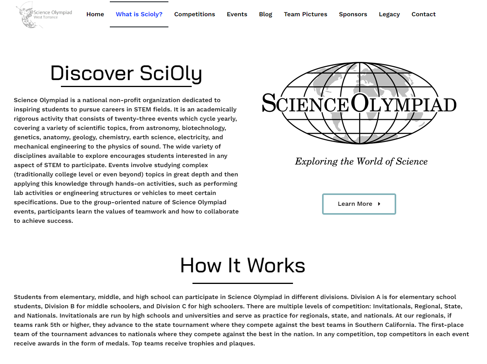
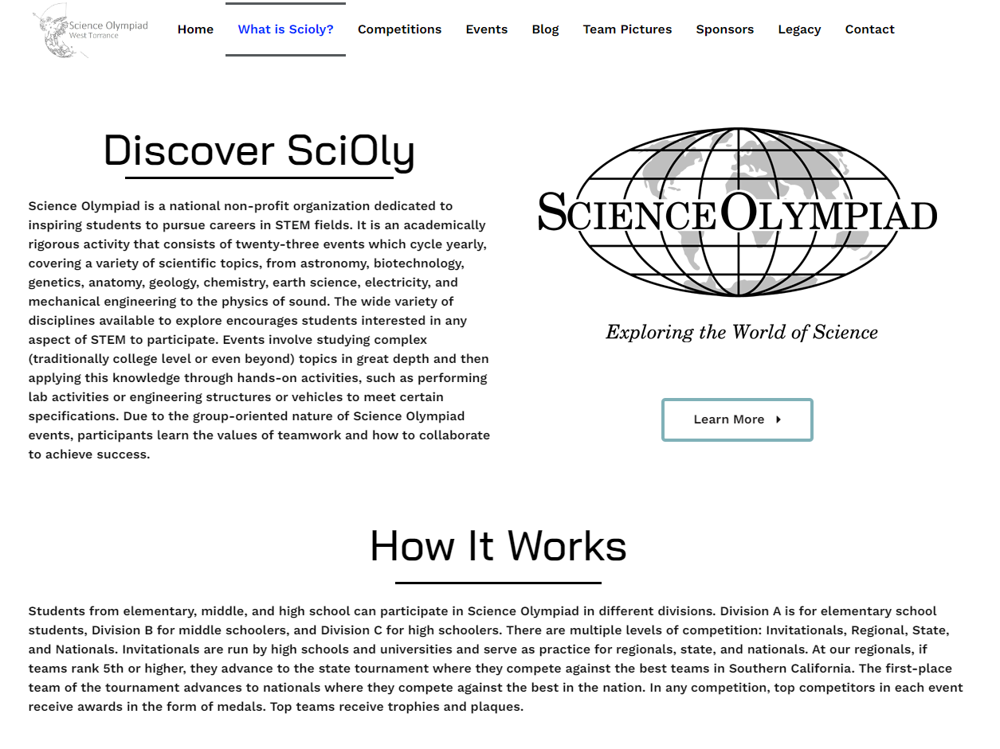

Through participating in numerous hackathons, I have gained valuable hands-on experience in coding, collaboration, and communication. The fast-paced and intense nature of hackathons provided opportunities to quickly prototype and develop projects using languages like Python, JavaScript, and C++. Working closely with teammates, often meeting for the first time at the start of the event, honed my ability to effectively collaborate and coordinate with others. Presenting our hacks at the conclusion of the events also improved my public speaking and communication abilities. The creativity and problem-solving skills I leveraged during hackathons allow me to thrive in environments requiring nimble and adaptive thinking. I'm eager to apply the well-rounded expertise I built through hackathons to new challenges and innovation efforts.

As a member of the Association for Computing Machinery (ACM) chapter at the University of California, Riverside, I have developed valuable skills in leadership, communication, and collaboration. Through my involvement as a Sponsorship Committee member, I gained first-hand experience in relationship-building, fundraising, and event organization. Reaching out to potential corporate sponsors enabled me to improve my written and verbal communication abilities. Coordinating logistics for ACM-hosted programming workshops, hackathons, and tech talks required attention to detail, project management, and the ability to work cohesively with other team members. My time in ACM strengthened my passion for computer science and exposed me to the many applications of technology in business and society. I look forward to continuing my membership in ACM and further developing my technical knowledge and leadership capabilities. The practical experience I have gained through this organization has prepared me well for a career in the tech industry.
As the treasurer and web developer for my high school's Science Olympiad team, I honed valuable leadership, technical, and communication abilities. In the treasurer role, I maintained accurate financial records, managed fundraising and sponsorship efforts, and ensured fiscal responsibility. Developing the team website provided hands-on experience with web development using WordPress, HTML, CSS, and JavaScript. I collaborated closely with our president and other officers to create a user-friendly site that served as an effective resource for members. Through Science Olympiad, I strengthened skills in time management, attention to detail, problem-solving, and working cooperatively in a team environment. Both the web development and treasurer positions required clear communication and the ability to explain complex concepts simply and accurately. My time on the Science Olympiad leadership team sparked my interest in STEM fields and demonstrated the value of perseverance and creativity in tackling challenges.
 

With over 5 years of experience as a compassionate caregiver for disabled children, I have honed my ability to tend to their unique needs in both home and school environments. Assisting children with daily activities such as eating, bathing, and getting dressed, as well as administering medications and tracking health status, has made me highly capable and confident in providing supportive care. My patience and adaptability serve me well when working with nonverbal or emotionally distressed children, allowing me to calmly de-escalate behavioral outbursts. Communication is key in my role, and I collaborate closely with each child's parents, teachers, and therapists to ensure continuity of care between settings. Building trusted relationships with families has been exceptionally rewarding. My passion for helping children, technical skills, and medical knowledge position me well to continue making a difference in the lives of young people with disabilities. I am eager to join a team where I can utilize my experience and caring nature.
As an employee at Ramen Yamadaya, I gained valuable hands-on experience in various front and back-of-house roles including cashier, busser, cleaner, and kitchen helper. My responsibilities at the cash register involved taking customer orders accurately, handling cash and credit card transactions, and providing excellent service. As a busser, I worked diligently to clear tables, reset tableware, and maintain a clean dining area. I also frequently assisted in the kitchen, helping prep ingredients, assemble dishes, and learn food preparation techniques. The fast-paced nature of the restaurant developed my abilities to multi-task, work under pressure, and remain flexible when shifting between roles. My time at Ramen Yamadaya also improved my teamwork, communication, and customer service skills as I worked closely with the front and back-of-house staff daily. I am eager to apply the well-rounded capabilities I built in the restaurant industry to new challenges.